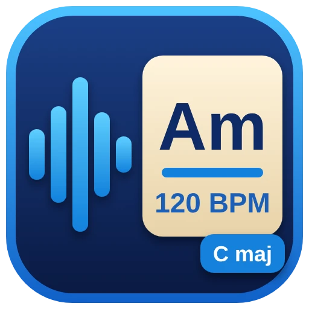

FAIND app · free tool
Find the BPM, key and chords of a song
FAIND BPM, Key and Chords Finder reads a song file and returns its tempo, its musical key (with Camelot and Open Key codes) and an estimated chord chart, for DJs, producers and musicians.
Free, no account. It runs in your browser, so the song is never uploaded. Chords are an estimate. Check it yourself ↓
Drop in a song and get its tempo, its musical key with the Camelot code, and a chord chart you can follow while it plays.
- No account
- No watermark
- No ads
- No song limit
Tempo
–
Key
–
Camelot · Open Key
–
Chords (estimate)
Tap a chord to jump to that point in the song. Chords are read from the full mix and shown as plain major or minor chords, so extensions (7th, sus, add9) are not named. Check the result with your ears or your instrument before you rely on it.
Camelot and Open Key, and a chord chart you can keep
The result shows the Camelot code and the Open Key code side by side, with the codes that mix well with your track. The chord chart is time-stamped, follows the song as it plays, and you can download it as a text file or copy the key and BPM as one line for your track notes.
How it works
The page decodes your audio in the browser and looks at it in three ways. For the tempo it measures how often the sound hits (kicks, snares, strums) and finds the beat rate that fits best. For the key it counts which of the 12 notes are played most, after correcting for songs that are slightly out of tune, and compares that with the usual major and minor patterns. For the chords it does the same note counting second by second and matches each moment against major and minor triads, then smooths the result so the chords do not flicker.
The analysis code is written by FAIND, runs on your device and loads no other libraries. Nothing is sent anywhere. See the privacy notes.
Check it yourself: nothing is uploaded
You do not have to take our word for it. Any browser can show you where the data goes.
- Open your browser's developer tools (F12, or Cmd+Option+I on a Mac) and go to the Network tab.
- Choose a file and run the tool.
- Read the list of requests. There is nothing else to download: the analysis code is on this page. No request carries your file: there is no upload (no large POST or PUT). The only other traffic is a cookie-free visit counter that sends the page address, never your file.
What people use it for
DJs and producers matching tracks
Get the BPM and the Camelot code, and pick tracks with the same number or one step away on the wheel. Check a sample or a loop before you drop it into a project.
Learning a song
Play the file, follow the chord chart as it moves, and use it as a first draft to work out on guitar or piano. Slow passages and clear chords come out best.
Singers and bands choosing a key
Find the key of the original so you can decide whether to transpose it for your voice or your instrument.
What to expect
| Tempo | One average BPM for the whole song, with the double or half reading shown under it. Best on songs with a steady beat. |
|---|---|
| Key | The best match among 24 major and minor keys, plus the next best ones. The relative major or minor is the most common mix-up, and the page says when it is close. |
| Chords | Plain major and minor chords, an estimate. Good on clear harmonic music, weaker on busy mixes, heavy distortion, rap and songs that change key. |
| Speed | Usually a few seconds to half a minute, depending on your device and the length of the song. |
| Limits | Up to 150 MB per file; the first 10 minutes are analysed. Keep the tab open while it works. |
Camelot wheel and Open Key chart
Two tracks mix well when their codes are the same, one number apart, or the same number with the other letter (A is minor, B is major). Open Key is the same wheel numbered differently: d is major, m is minor.
| Camelot | Major key | Open Key | Camelot | Minor key | Open Key |
|---|---|---|---|---|---|
| 1B | B | 6d | 1A | G#m | 6m |
| 2B | F# | 7d | 2A | D#m | 7m |
| 3B | Db | 8d | 3A | Bbm | 8m |
| 4B | Ab | 9d | 4A | Fm | 9m |
| 5B | Eb | 10d | 5A | Cm | 10m |
| 6B | Bb | 11d | 6A | Gm | 11m |
| 7B | F | 12d | 7A | Dm | 12m |
| 8B | C | 1d | 8A | Am | 1m |
| 9B | G | 2d | 9A | Em | 2m |
| 10B | D | 3d | 10A | Bm | 3m |
| 11B | A | 4d | 11A | F#m | 4m |
| 12B | E | 5d | 12A | C#m | 5m |
Some keys have two spellings (F# is also Gb, D#m is also Ebm). The page shows the one used in the usual key signature.
Questions people ask
How do I find the key and BPM of a song?
Drop the audio file into the box at the top of this page. After a few seconds you see the tempo in beats per minute, the musical key (for example A minor) and its Camelot code, which DJs use to mix in key. There is no account and no upload: your own device does the analysis.
Can I find the chords of a song from an MP3?
Yes, as an estimate. The page listens to the harmony and lists the major and minor chords in time order, and you can play the song and watch the current chord light up. It is a good starting point for learning a song, but always check it against your ears or your instrument.
How accurate are the chords it finds?
It reads chords from the full mix, with drums, vocals and everything else playing at once, and that is hard even for dedicated software. Expect the main chords of a clear, harmonic song to be right most of the time, and expect mistakes on busy mixes, heavy distortion, rap or songs that change key. It only names plain major and minor chords, so a Cmaj7 or a C7 usually appears as C. Treat the result as a draft.
How does the BPM and key detection work?
Tempo comes from the rhythm of the sound: the page measures how often the music hits (kicks, snares, strums) and finds the beat rate that fits best. The key comes from which of the 12 notes are played most, compared with typical major and minor patterns. Chords use the same note information, matched second by second against major and minor triads. All of it runs on your device.
What is the Camelot code?
It is a numbered wheel, from 1A to 12B, that DJs use to pick tracks that mix well. Songs with the same number, or a number one step away, are harmonically compatible. The page shows both the Camelot and the Open Key notation.
Why does it show two possible keys?
Every major key shares its notes with a relative minor key (C major and A minor, for example), so the two are easy to confuse. When the match is close, the page tells you and lists the next best keys. The chords often settle it: a song that starts and ends on Am is usually in A minor.
Why is the BPM double or half of what I expected?
A beat can be felt at two speeds. A slow ballad at 70 BPM can also be counted as 140. The page picks the most likely one and shows the other reading under it, so you can choose the one that matches how you tap your foot.
Is my song uploaded anywhere?
No. The file is decoded and analysed in your browser and is never sent to FAIND or to any other server. This page loads nothing else to do the analysis.
Is it really free?
Yes: no account, no watermark, no limit on how many songs you check. Your own device does the work, so it costs FAIND nothing to run.
What files and lengths work?
MP3, WAV, M4A, AAC, OGG, FLAC and the sound of most video files, as long as your browser can play them. Files up to 150 MB are accepted, and the first 10 minutes of the audio are analysed.
Does it work if the tempo changes during the song?
It reports one average tempo for the whole song, so it works best on songs played to a steady beat. Live recordings and songs with tempo changes can come out wrong or with low confidence.
Can I paste a Spotify or YouTube link?
No. The page works on audio files you choose from your own device, because a browser cannot take the sound out of a streaming page. If you have the right to use the track, open the file here.
How can I check that my song is not uploaded?
Open the developer tools of your browser (F12), go to the Network tab and analyse a song: no request sends your file anywhere. The steps are in the "Check it yourself" section above.
Which songs mix well together?
Use the Camelot code. Tracks with the same code mix cleanly, and so do tracks one number up or down (8A to 9A or 7A) and tracks with the same number and the other letter (8A to 8B). Check the BPM too: keys can match while the tempos are far apart.
What is Open Key notation?
It is a second way to label the same wheel, used by some DJ software. The numbers are shifted: C major is 8B in Camelot and 1d in Open Key, A minor is 8A and 1m. The page shows both, and the chart above lists all 24 keys.
Can I download the chord chart?
Yes. After the analysis, use "Download the chart (.txt)" to save the time-stamped chords with the BPM and key, or "Copy the chord chart" to paste them somewhere else. There is also a button that copies the key and BPM as a single line.